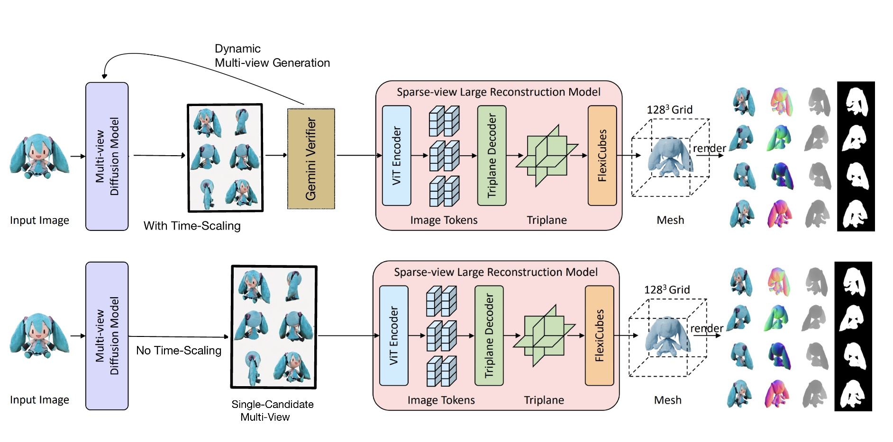
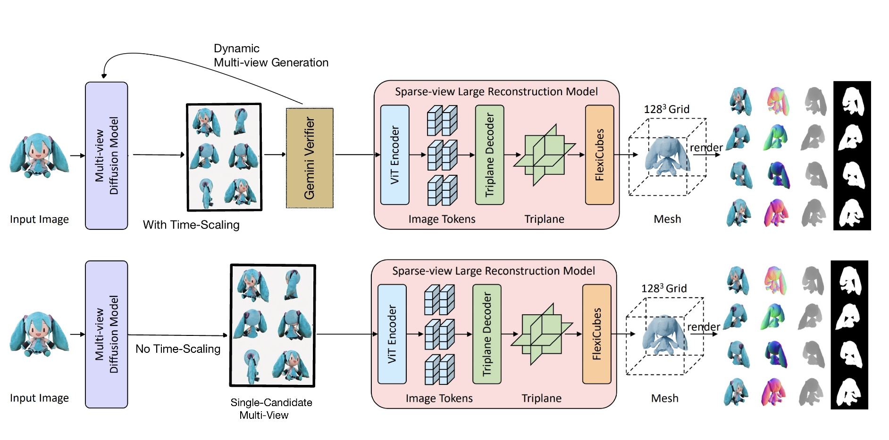
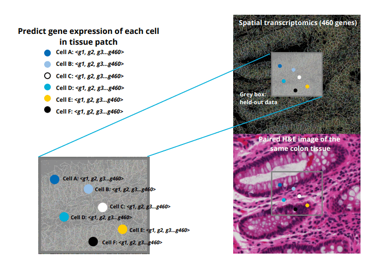
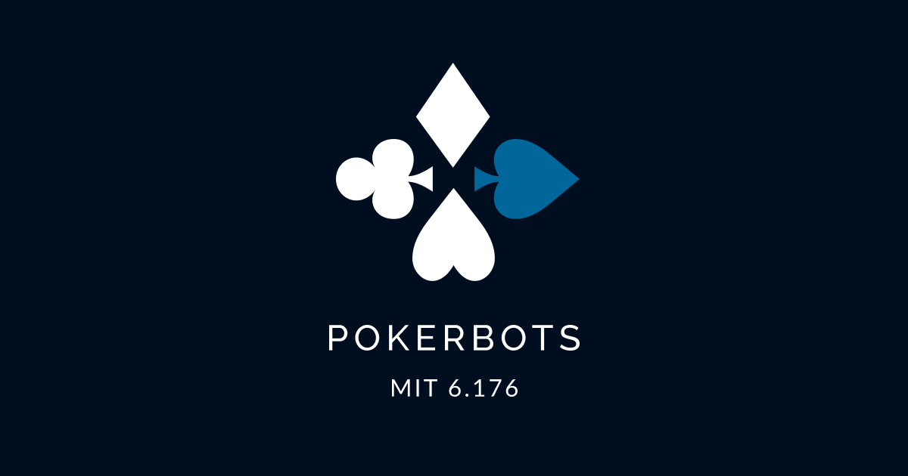

Hi! I’m Tessa Everett, a student at MIT pursuing a B.S. in Artificial Intelligence and Decision-Making,
graduating in May 2026. I have a passion for applying machine learning and optimization techniques to solve complex,
impactful problems ranging from biological contexts to logistics optimization, real-time data analysis, and enhancing
user experiences through innovative AI solutions. My work has included developing computer vision pipelines for object detection,
optimizing machine learning models, and transitioning workflows to scalable cloud platforms like AWS.
 

We proposed a compute-efficient algorithm to improve 3D mesh generation from 2D images
using inference-time scaling. By integrating adaptive Best-of-N sampling and a multimodal
LLM verifier (Gemini), we boost output quality without retraining. Evaluated on 145 objects
from the Objaverse-XL dataset, our method showed measurable gains across all 2D perceptual
metrics.

In the Autoimmune Disease Machine Learning Challenge organized by the Eric and Wendy Schmidt Center at the Broad Institute and partners, our team focused on Crunch 1,
where the task was to predict spatial transcriptomics profiles from routine H&E pathology images. Specifically, we aimed to “inpaint” held-out patches of Xenium spatial
transcriptomics data by leveraging the surrounding tissue’s matched H&E images and existing spatial transcriptomic ...

In my Summer 2024 internship, I used YOLOv8 and YOLOv10 to train object detection and object segmentation models. I labeled images using MakeSenese
AI and trained the YOLO models in AWS. During this project, I built different methods to adress class imbalance, utilizing under and oversampling methods,
preprocessing, and splitting datasets. Addtionaly, I aided in the transition from local training to cloud-based training ...

I participated in MIT's 2024 PokerBot Competition, where my partner and I spent a month
designing, implementing, and testing a Python pokerbot to play the 2024 auction hold'em variation.
During this month of dedicated work, I focussed on project-based coding and strategy development.
I enjoyed delving deep into game theory, ultimately building a bot that relied on statistical analysis
and studied poker theory.